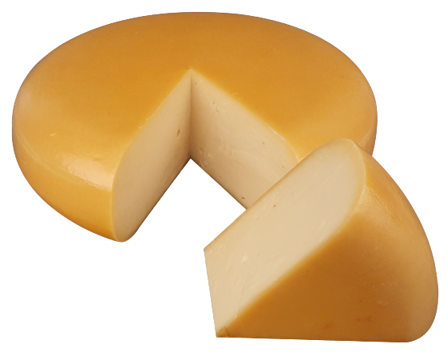

Over ons
Wij zijn Ryan Tuijp en Floor Buijink en wij hebben samen dezen website gemaakt.
Wij hebben deze website gemaakt voor mensen die meer over kaas willen weten.
Deze website is ook gemaakt voor onze praktiche opdracht voor informatica.
Wij zitten in vwo 4 op de OSG op het Atlas College.
Wij hebben een enorme passie voor kaas en wouden deze delen met jullie.
